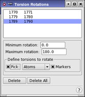

| Using | Features | Links |
This panel allows the torsion locations for Monte Carlo (MCMM and SPMC) calculations to be specified.
To open this panel, choose Torsion Rotations from the Search variables option menu in the CSearch tab of the Conformational Search panel and click Edit.
During a Monte Carlo conformational search, random changes are performed on the structure of the molecule. Structure energies are then evaluated. To set up a Monte Carlo-based search using either the MCMM or SPMC method, it is necessary to specify which torsions in the molecule can be rotated. These torsions are defined by pairs of atoms (defining bonds around which the structures can be rotated) using the Torsion Rotations panel.
The simplest way to define torsion rotations is to use the Perform Automatic Setup button in the Conformational Search panel. MacroModel detects torsions that need to be rotated, and generates a list of torsion rotation definitions. This list is displayed at the top of the panel.
If Markers is selected, the bonds defined as torsion rotations are indicated in the Workspace by a purple line and an icon (a purple horizontal line encircled by an arrow).

This list shows the sets of two atoms that define the torsion rotations to use in the calculations. You can select a line in the list to display or delete.
If you clicked Perform Automatic Setup in the Conformational Search panel, this list contains the results of the setup when you open the panel.
The minimum acceptable rotation of a torsion must be specified. Each time in generating a new structure that a torsion must be rotated, an increment for rotation larger than this value will be selected. The default minimum rotation is 0.0.
If a torsion rotation is added for a double or amide bond(i.e. to search both E- and Z- isomers around these bonds), then the minimum value for rotations should be set to 90 degrees. This will maximize the probability that inter-conversion between the two isomers will occur.
This text box allows a value to be specified for the maximum acceptable torsion rotation increment. Each time a new structure is generated for which a torsion must be rotated, an increment for rotation smaller than this value is selected. The default maximum rotation is 180.
To manually define torsion locations, pick two atoms with the standard picking controls in this section. As the first atom is picked, a purple box is placed around it. Once the second atom is picked, a new entry is displayed in the list.
A torsion rotation can be redefined by picking new atoms while the closure is selected in the list.
If this option is selected, the two selected atoms are marked with a solid purple line between them and a curved arrow around the line. To distinguish the currently selected closure, a dotted line is placed on either side of the solid line.
To delete a defined torsion rotation, select it by clicking on it in the list, or re-pick the atoms that define it, then click Delete.
To delete all the defined torsion rotations, click this button.